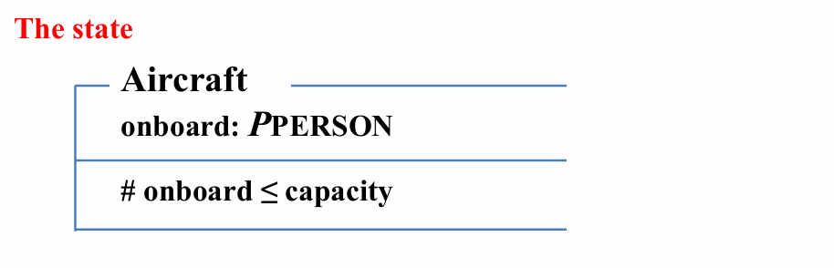
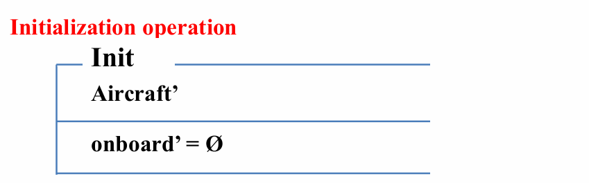
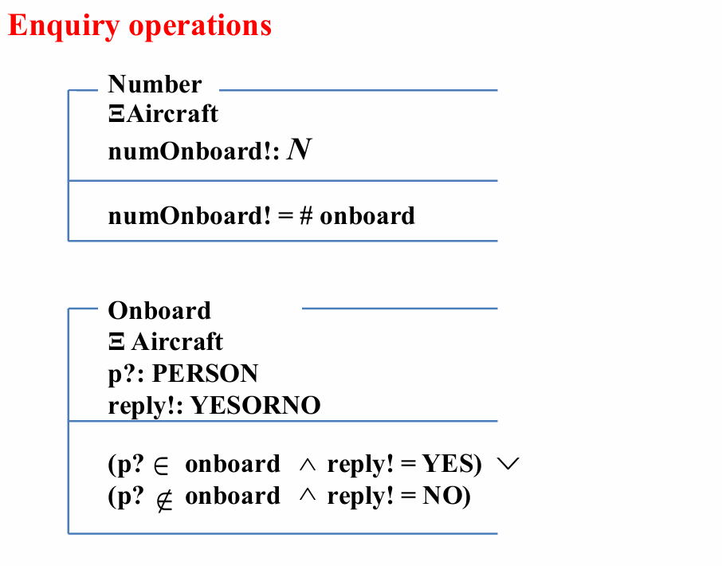
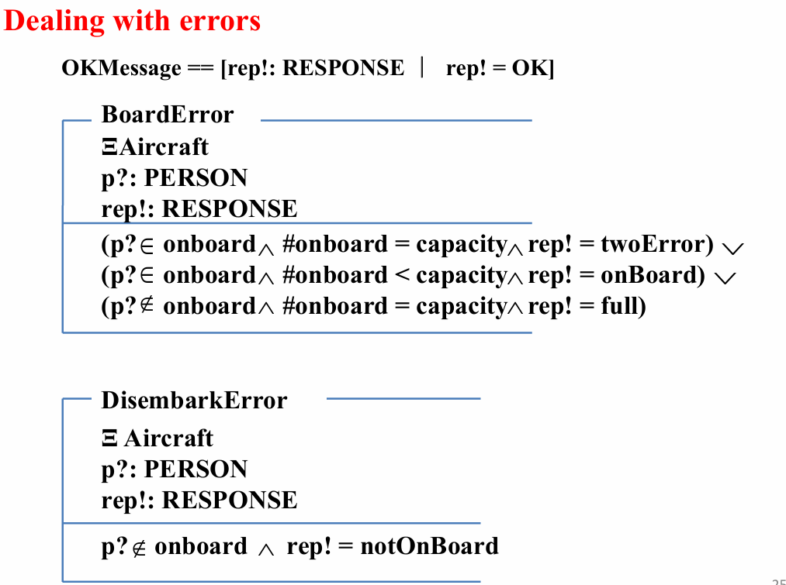
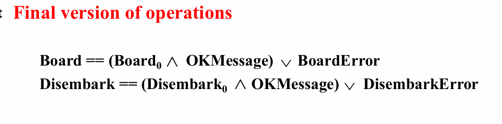

Hints on creating specification
有关创建规范的提示
Introduction
schema的说明
Type
规范中使用的类型
Be sure that your types are truly atomic.
确保你的类型是真正的原子类型
Relationships
By discovering how many values of what type are related to how many of the other type, find out is any of the relations are functions.
通过发现什么类型的多少个值与多少个其他类型的值相关，找出任何关系都是函数。
The state
状态及其不变属性
To discover some invariants, which are included in the state schema.
发现一些不变量，这些不变量包含在状态架构中
Initialization
将变量设置为某个初始状态的操作
operation The initial state should NOT violate any invariant of the system.
初始状态不应违反系统的任何不变量。
- 在init声明中使用\(State'\)
### Operations
要求实现的各种操作
To consider the behavior of each operation when it is given sensible values.
To state what does not change as a result of an operation.
考虑每个操作在给定合理值时的行为。说明作不会因操作而改变的内容
- 在Operations声明中使用\(\Delta State\)
Enquiry operations
查询
Use a xi (\(\Xi\)) schema where possible.
- 在enquiry和error声明中使用\(\Xi State\)
In the case of severe difficulty
To try viewing it in a more abstract way.
To hide some of the details at first.
尝试以更抽象的方式查看它。首先隐藏一些细节。
Error
错误处理
- 在enquiry和error声明中使用\(\Xi State\)
Final version
操作和查询的最终版本
每个error后都会写一个Final version，形式为：
操作 == ( 初始情况 $\wedge$ OKMessage) $\vee$ 错误情况
（其中OKMessage在error前定义，其type为RESPONSE，表示正常情况， reply 为 OK；对于错误情况，输出开头定义的RESPONSE错误类型。）
OKMessage定义为：
OKMessage == [rep! : RESPONSE | rep! = OK]
*举例：Aircraft系统
- types
类型：
- 集合 [PERSON]
- 变量（基本、自由）

- state
状态：
- 声明系统的变量（取子集）
- 约束

- Initialization
初始化：
- 到下一状态
- 空集

- operations
操作：
- 每一种操作对应系统的状态改变 \(\Delta\)（系统变量改变）
- 声明输入 ? 变量
- 变量约束、次态变量操作

- Enquiry operations
查询：
- 每一种查询对应系统的状态改变 \(\Xi\)（系统变量不变）
- 声明输入 ? 输出 ! 变量
- 对应输入变量，赋值给输出变量
- 不同情况用 \(\vee\) 连接，同一情况用 \(\wedge\) 连接

- Dealing with errors
错误处理：
- 发生错误时对应系统的状态改变 \(\Xi\)（系统变量不变）
- 声明输入 ? 输出 ! 变量
- 根据特定输入，列出各种可能出错的情况，对应输出

- Final version of operations
最终：
- 对于正常情况，定义 OKMessage，其 reply 为 OK
- 操作 == (初始情况 \(\wedge\) OKMessage) \(\vee\) 错误情况

* 举例：EXAMPLE_Lib
见ppt。